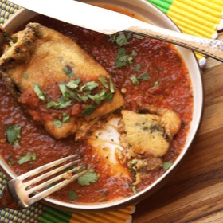

← All recipes
Chiles Rellenos (Mexican-Style Cheese-Stuffed Chiles)

Servings: 3 to 4 servings · Prep: 20 mins · Cook: 70 mins
Ingredients
- For the Salsa Ranchera and Chiles:
- 6 poblano peppers
- 2 pounds Roma tomatoes (1 kg; about 6 medium)
- 1 small yellow onion (about 6 ounces; 170 g), split in half, unpeeled
- 2 to 3 serrano chiles
- 6 medium cloves garlic, unpeeled
- 1/2 cup (120 ml) chicken stock or water
- 1/2 cup loosely packed cilantro leaves and tender stems (1/2 ounce; 15 g)
- 1 tablespoon (15 ml) lard or vegetable oil
- Kosher salt and freshly ground black pepper
- For the Filling:
- 1 tablespoon (15 ml) lard or vegetable oil
- 1 small onion (about 6 ounces; 170 g), finely diced
- 1 teaspoon (about 2 g) dried oregano
- 1/2 pound (225 g) fresh Mexican chorizo or ground pork
- Kosher salt and freshly ground black pepper
- 10 ounces (285 g) grated Jack, pepper jack, Chihuahua, or cheddar cheese; 16 ounces (450 g) if making smothered version (see notes)
- To Fry:
- 2 cups (475 ml) vegetable oil
- 4 large eggs, separated
- 1 cup flour (5 ounces; 140 g), divided
Directions
- For the Salsa Ranchera and Chiles: Adjust rack to 4 inches below broiler and preheat broiler to high. Place poblanos, tomatoes, onion, serranos, and garlic on a foil-lined rimmed baking sheet. Broil until chiles are blackened on top, about 5 minutes. Flip chiles to expose another un-blackened surface and continue broiling for another 5 minutes. Turn chiles one more time, flip tomatoes, and continue broiling until chiles are blackened all over, a few minutes longer.
- Transfer tomatoes, onion, garlic, serranos, stock, and cilantro to the bowl of a food processor or blender. Wrap Poblanos with foil from baking sheet and set them aside to steam. Process salsa until smooth but still a little chunky.
- Heat 1 tablespoon (15ml) lard or oil in a medium saucepan until just starting to smoke. Immediately pour all of the salsa into pan (it will bubble very violently). Bring to a simmer and cook until reduced by about 1/2 cup. Season to taste with salt and pepper and set aside.
- For the Filling: Heat 1 tablespoon (15ml) lard or vegetable oil in a large skillet over medium-high heat until shimmering. Add onion and cook, stirring, until softened and gently browned, about 4 minutes. Add oregano and chorizo or pork and cook, breaking it up with a wooden spoon, until cooked through, about 5 minutes. Season to taste with salt and pepper. Immediately transfer pork mixture to a bowl with grated cheese and toss to combine. Set aside.
- Carefully peel chiles without tearing them. Make a slit in one and remove most of the seeds. Spoon cheese/pork mixture into the cavity and carefully close chile back up, slightly overlapping the edges. Repeat with remaining chiles. If you are making the smothered version, you should have about 1 cup of filling left over (see notes).
- To Fry: Heat oil in a large skillet over medium-high heat until it reaches 375°F (190°C). Adjust heat to maintain temperature. Whisk egg whites until stiff peaks form. Whisk in yolks one at a time until incorporated (do not over-whisk). Sprinkle with 1/4 cup flour and whisk just until flour is incorporated. Set aside.
- Place remaining flour on a shallow plate. Gently pick up one chile and roll it in flour to coat. Transfer to egg mixture and gently turn to coat. (You may have to spoon the mixture over the top if the chile is too fragile.) Using your hands or a flexible fish spatula, carefully slip one chile into hot oil. Repeat until pan is full, making sure not to crowd it. If there are any un-battered spots on the top surfaces of the chiles, dollop a small amount of batter on top to seal them. Cook until the bottom side is golden brown, about 2 minutes. Carefully turn and cook until second side is browned, about 2 minutes longer. Transfer cooked chiles to a paper towel–lined plate. Repeat until all chiles are cooked.
- For the Traditional Version: Spoon salsa into the bottom of a casserole dish. Top with chiles and spoon a little more salsa over them. Serve immediately or bake in a 375°F (190°C) oven for a few minutes to reheat if desired.
- For the Smothered Version: Spoon salsa into the bottom of a casserole dish. Top with chiles and spoon a little more salsa over them. Spread remaining filling mixture over the top. Bake in a 375°F (190°C) oven until melted and bubbly, about 10 minutes. Serve immediately.
Notes
Chiles rellenos are typically served only with sauce on top, but you can make a cheese-covered, smothered, and baked version if you prefer.
Original source: seriouseats.com